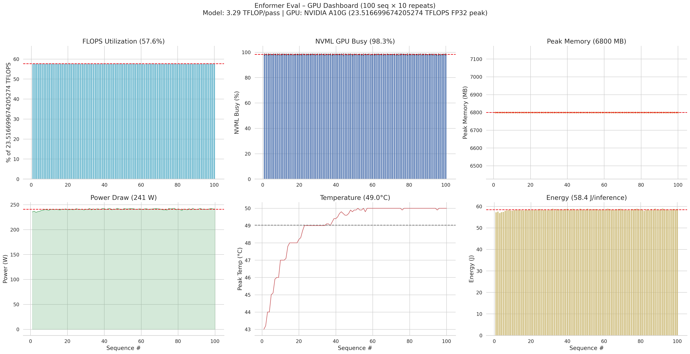
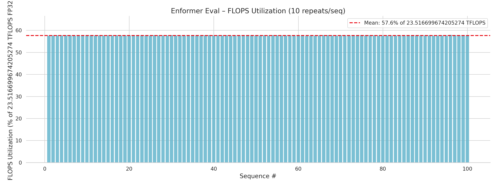
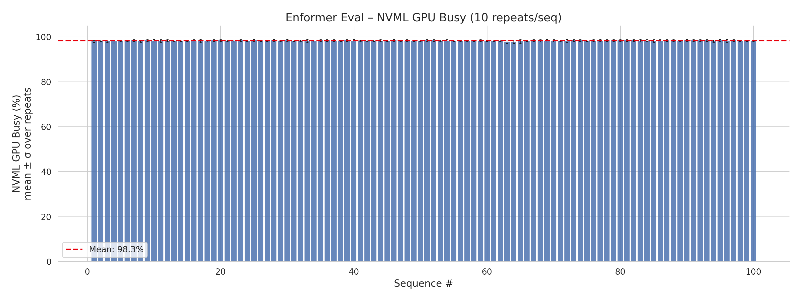
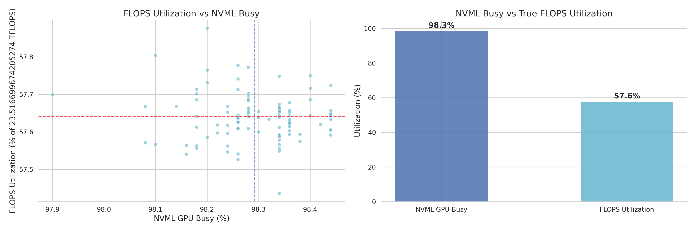
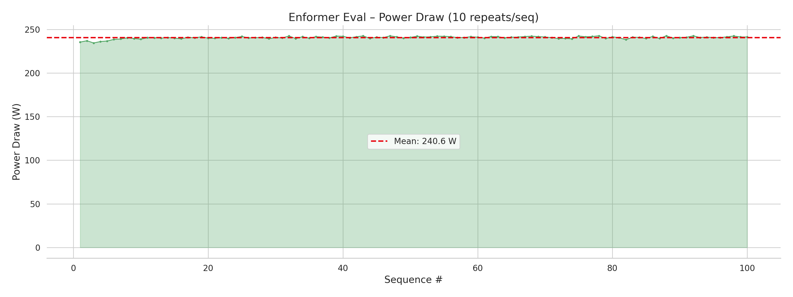
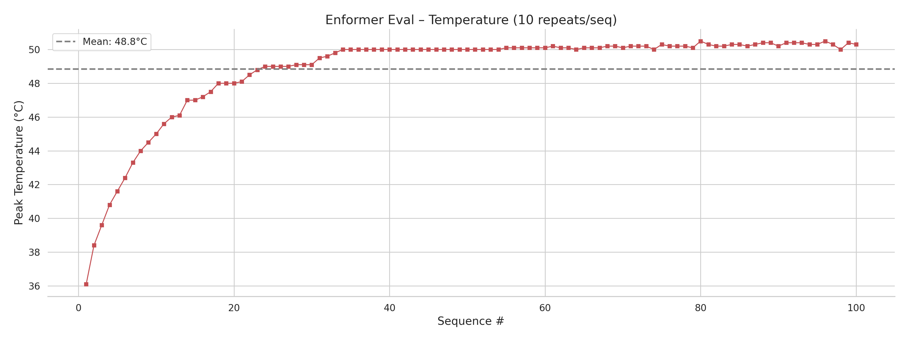
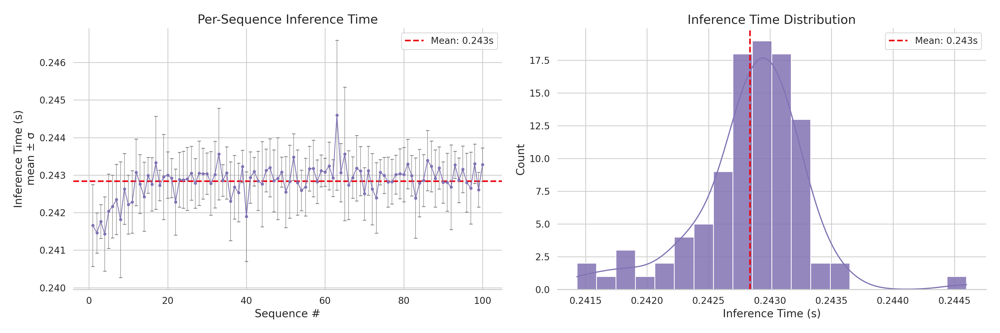

Enformer GPU Profiling Report
This report presents a comprehensive GPU profiling analysis of
Enformer inference
using profgpu. The goal is to demonstrate how profgpu's profile_repeats
API can characterize GPU behaviour beyond the coarse "GPU busy %" that NVML
reports, including true FLOPS utilization as a percentage of peak hardware
throughput.
Experiment Setup
| Parameter | Value |
|---|---|
| Model | Enformer (enformer-pytorch 0.8.11) |
| Weights | EleutherAI/enformer-official-rough (HuggingFace) |
| Parameters | 251,221,292 (~251 M) |
| Input | Random one-hot DNA sequences, 196,608 bp × 4 bases |
| Batch size | 1 |
| Sequences | 100 |
| Repeats / sequence | 10 (with 1 warmup run excluded) |
| Total forward passes | 1,000 |
| Precision | FP32 (PyTorch default) |
| GPU | NVIDIA A10G (Ampere, 24 GB GDDR6X) |
| Driver / CUDA | CUDA 12.4, PyTorch 2.6.0 |
| Profiling tool | profgpu profile_repeats() with NVML backend, 50 ms polling |
About the Model
Enformer is a deep-learning model for predicting gene expression and chromatin states from DNA sequence. It uses a convolutional stem followed by 11 Transformer blocks operating over a 196,608 bp input window and produces 5,313 human and 1,643 mouse genomic tracks.
The model was published by DeepMind (Avsec et al., Nature Methods 2021) and reimplemented in PyTorch by lucidrains.
How Metrics Are Computed
FLOP Counting
We use torch.utils.flop_counter.FlopCounterMode to count the exact
number of floating-point operations in a single forward pass. This context
manager hooks into every ATen operator and tallies FLOPs analytically (e.g.
matrix multiplications, convolutions, reductions). For Enformer:
This is more accurate than estimation heuristics (e.g. 2 × MACs) because it
counts every operator, not just matmuls.
Peak Hardware TFLOPS
Rather than relying on a hardcoded lookup table of datasheet values, we estimate peak TFLOPS programmatically using two complementary methods:
Method 1 — Theoretical (from CUDA device properties)
Every CUDA device exposes its SM count, compute capability, and boost clock
via torch.cuda.get_device_properties(). Combined with a small table mapping
compute capability → FP32 cores per SM, we compute:
The ×2 factor accounts for fused multiply-add (each FMA = 2 FLOPs per clock).
| Compute Capability | Architecture | FP32 Cores / SM | Example GPUs |
|---|---|---|---|
| 7.0 | Volta | 64 | V100 |
| 7.5 | Turing | 64 | T4, RTX 2080 |
| 8.0 | Ampere | 64 | A100 |
| 8.6 | Ampere | 128 | A10G, RTX 3090 |
| 8.9 | Ada Lovelace | 128 | L4, L40, RTX 4090 |
| 9.0 | Hopper | 128 | H100 |
For the A10G (CC 8.6, 80 SMs, 1710 MHz boost):
Method 2 — Empirical GEMM benchmark
The theoretical number assumes every core is busy every cycle, which is never achievable in practice. We measure the realistic peak by running a large matrix multiplication (4096 × 4096 FP32, 100 iterations after 20 warmup) that saturates the GPU's arithmetic units:
def empirical_peak_tflops(device=0, warmup=20, iters=100):
results = {}
for n in (2048, 4096, 8192):
a = torch.randn(n, n, device=f"cuda:{device}")
b = torch.randn(n, n, device=f"cuda:{device}")
for label, tf32 in (("fp32", False), ("tf32", True)):
torch.backends.cuda.matmul.allow_tf32 = tf32
# ... warmup + timed loop ...
tflops = (2 * n**3 * iters / elapsed) / 1e12
results[label] = max(results.get(label, 0), tflops)
return results # {"fp32": 23.5, "tf32": 34.1}
The function sweeps matrix sizes (2048, 4096, 8192) and tests with TF32 tensor cores both enabled and disabled, returning both peaks.
Results on A10G
| Method | TFLOPS |
|---|---|
| Theoretical (CUDA props) | 35.0 |
| Empirical FP32 (CUDA cores, TF32=off) | 23.5 |
| Empirical TF32 (Tensor Cores, TF32=on) | 34.1 |
| NVIDIA datasheet "FP32" | 31.2 |
NVIDIA's datasheet "31.2 TFLOPS FP32" actually uses TF32 Tensor
Cores — the inputs and outputs are float32, but the internal multiply
accumulates at TF32 precision (10-bit mantissa). With
torch.backends.cuda.matmul.allow_tf32 = False (pure FP32 CUDA cores),
throughput drops to ~23.5 TFLOPS.
Since Enformer runs with allow_tf32 = False (the default in our
script), we use the empirical FP32 peak (23.5 TFLOPS) as the
FLOPS utilization ceiling — giving a more honest efficiency number.
FLOPS Utilization
For each sequence, we compute:
This gives a true compute-efficiency metric — what fraction of the GPU's theoretical maximum throughput your workload actually uses.
NVML GPU Busy (%)
This is the metric reported by nvidia-smi and the NVML API
(nvmlDeviceGetUtilizationRates). It measures the fraction of time at least
one GPU kernel was running during the driver's ~1-second sampling window. A
value of 98% means the GPU was "doing something" 98% of the time — but says
nothing about how efficiently the hardware is used.
NVML busy ≠ compute efficiency
A kernel that reads one byte from global memory still registers as 100% utilization for that sampling window. FLOPS utilization is the metric that actually captures how much of the chip's arithmetic capacity is used.
Profiling with profile_repeats
Each of the 100 sequences is profiled with 10 independent repeats (plus 1
warmup run that is excluded from statistics). profile_repeats returns a
MultiRunResult containing RunStats for every metric (mean, std, min, max,
per-run values). This design:
- Absorbs run-to-run jitter from GPU clock boosting, host scheduling, and memory allocator warm-up.
- Provides standard deviations and confidence intervals.
- Lets you distinguish systematic sequence-level variation from random noise.
from profgpu import profile_repeats
result = profile_repeats(
run_inference,
repeats=10,
warmup_runs=1,
device=0,
interval_s=0.05, # 50 ms NVML polling
sync_fn=torch.cuda.synchronize,
)
# result.util_gpu.mean, result.duration.std, etc.
Results
Aggregate Statistics
| Metric | Value |
|---|---|
| Achieved TFLOPS | 13.56 TFLOPS |
| FLOPS Util (vs empirical FP32 peak) | 57.6% of 23.5 TFLOPS (min 57.4%, max 57.9%) |
| FLOPS Util (vs datasheet/TF32 peak) | ~43.5% of 31.2 TFLOPS |
| NVML GPU Busy | 98.3% ± 0.1% (min 98%, max 98%) |
| Peak Memory | 6,800 MB ± 0 MB |
| Power Draw | 240.6 W ± 1.5 W (max 243 W) |
| Temperature | 49.0°C ± 1.6°C (max 50°C) |
| Energy | 58.44 J ± 0.36 J per inference |
| Inference Time | 0.243 s ± 0.000 s per sequence |
| Repeat σ (time) | 0.0008 s (extremely low run-to-run variance) |
| Total Inferences | 1,000 |
Key insight: The achieved throughput is a constant 13.56 TFLOPS. Whether that looks like "43.5% efficient" or "57.6% efficient" depends entirely on which ceiling you compare against:
- vs NVIDIA datasheet (31.2 TFLOPS): 43.5% — but this ceiling uses TF32 Tensor Cores internally, which Enformer doesn't leverage.
- vs empirical FP32 CUDA-core peak (23.5 TFLOPS): 57.6% — a fairer comparison when the model runs in pure FP32.
Either way, NVML reports 98% "busy" — illustrating that kernel occupancy and compute efficiency are fundamentally different metrics.
GPU Dashboard
The 2×3 dashboard provides an at-a-glance view of all six key metrics across all 100 sequences:

FLOPS Utilization per Sequence

FLOPS utilization is remarkably stable at 57.6%, with a spread of only 0.5 percentage points across 100 sequences (min 57.4%, max 57.9%). This confirms that Enformer's FP32 forward pass consistently achieves about 13.56 TFLOPS on the A10G.
NVML GPU Busy per Sequence

NVML reports near-ceiling 98% utilization with negligible run-to-run standard deviation. This metric is maximally saturated and provides no differentiation between workloads.
FLOPS Utilization vs NVML Busy

The scatter plot (left) and comparison bars (right) make the discrepancy concrete: NVML says "98% busy" while true compute efficiency is only 57.6% of the empirical FP32 peak (or 43.5% of the datasheet number).
Peak Memory per Sequence

GPU memory usage is constant at 6,800 MB — Enformer allocates once during the first forward pass and reuses the same memory pool thereafter.
Power Draw per Sequence

Power draw ramps to ~241 W (the A10G TDP is 300 W, max observed 243 W) with a slight upward trend as the GPU die temperature increases.
Temperature per Sequence

Temperature rises from ~47°C to ~50°C across the 100 sequences as the thermal load accumulates, then plateaus (mean 49.0°C ± 1.6°C).
Inference Time Distribution

The left panel shows per-sequence timing with ±1σ error bars from 10 repeats; the right panel shows the histogram with KDE overlay. The distribution is extremely tight around 0.243 s with sub-millisecond variance.
Reproducing This Report
# Create and activate the environment
conda create -n profgpu python=3.11 -y
conda activate profgpu
# Install dependencies
pip install profgpu[nvml] enformer-pytorch 'transformers<5' \
torch seaborn matplotlib numpy
# Run the profiling script (default: FP32 precision ceiling)
python examples/enformer_eval_gpu.py
# Or compare against TF32 peak
PRECISION=tf32 python examples/enformer_eval_gpu.py
Output figures are saved to examples/enformer_gpu_results/.
Source Code
The full script is at
examples/enformer_eval_gpu.py.